88fits Screens
Every screen of 88fits as it is today: what it is for, when it appears, what each control does and the rules behind it, with captures from the current build. It replaces the pass 38 UI review, which showed the game before the Wanted redesign.
How the screens connect
One screen at a time
Only one screen that pauses the run can be up. When two are due, the higher priority goes first and the other waits its turn. While the hero is down, only Down! may open: level-ups are kept for later.
| 70 | Down! |
| 60 | The portal (stage clear) |
| 45 / 40 | A boss's chest / a chest |
| 35 | The War Drum's moment |
| 30 | Level-up cards |
| 20 | A mutation offer |
| 10 | The shop, the Stranger, a Totem |
After level-up cards, a mutation or a chest, the run waits for TAP TO GO so the thumb can grip again; the other screens hand straight back.
Before the game
01Loading
game/ui/Boot.gdShow load progress between the engine's splash and the title so there is no visible jump.
When it appears
The first scene at app start. Godot's boot splash (art/ui/splash.png; on Android the system splash first) covers the engine start and the autoloads; Boot.gd then draws the same picture in the same place and fills the bar while the title loads on a thread, then dissolves (0.25 s) into the title. Nothing pauses; no input.
What it shows
- The splash picture: badge disc, title, tag line, the empty bar with the word LOADING
- A brass fill painted into the bar's track (to 65% during the threaded load, 95% after the title's build, full at its first frame)
Rules
- The bar never goes back; it creeps between the loader's few real steps.
- If the threaded load stalls for 10 s the title is loaded directly; if it cannot load at all a rock-red line says 'The title screen did not load. Please close the game and start it again.' and the screen stays.
- The camera-cutout ink band waits while this shows and fades in with the title.
States
loading (bar filling) · failed load (error line)
02Play data question
game/ui/wanted/WConsent.gdAsk once whether anonymous play data may be sent.
When it appears
Over the title, 0.8 s after it comes in, the first time a build that can send analytics starts and the question has not been answered. Closes on an answer; the back gesture leaves it unanswered and it comes again next launch.
What you can do
| NO THANKS | Declines: nothing is sent and anything waiting is deleted. The answer is kept in the save, through a wipe. |
|---|---|
| OK | Accepts: what waited is sent. From then on Settings' 'Anonymous play data' switch is the answer. |
| Dim around the card | Does nothing: the card wants an answer. |
What it shows
- Star line 'A quick word', title PLAY DATA
- Body: what is sent (the items you pick, where you fall, how smoothly it runs), that you appear only as your generated player name (e.g. 'Dusty Coyote 41'), that it asks a few questions after a run now and then, and that both can be turned off in Settings
Rules
- Until answered nothing is sent or written to disk.
- Not shown at all when the build's analytics key file is empty.
States
first launch, unanswered
The hub
03Title
game/ui/TitleScreen.gdPick a hero and start a run in one tap; reach the Upgrade board, the Collection and Settings.
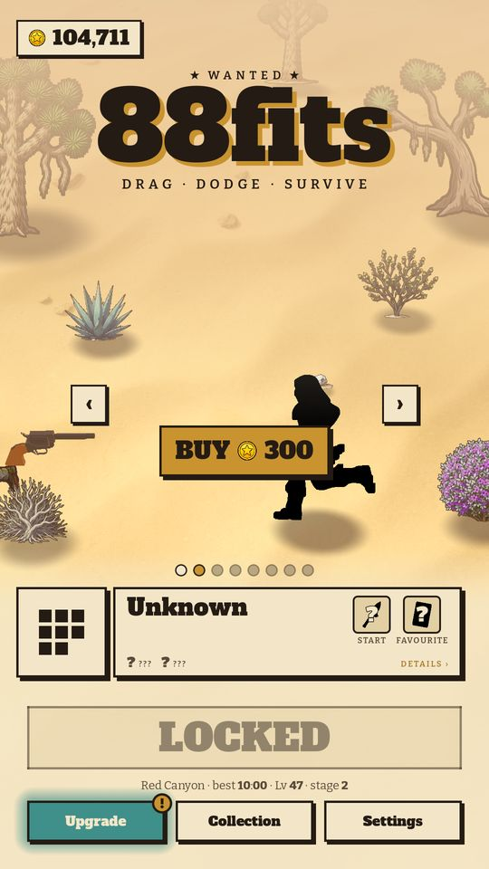
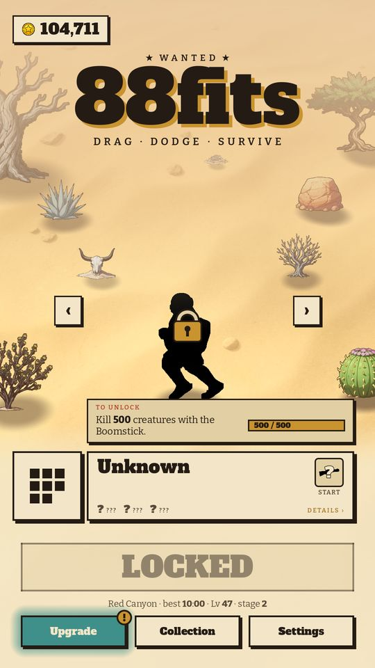
When it appears
After the loading screen; also from every hub screen's back square, Results' Main Menu, and leaving the arena. The back gesture on the title quits the app, after first closing the hero sheet, a buy question or the drawer.
What you can do
| Hero (swipe sideways over the hero row or the plaque) | Steps to the previous or next hero in the carousel. The new hero runs in from the side the finger went. |
|---|---|
| Arrow squares left and right of the hero (Prev / Next) | Previous / next hero, as a swipe. |
| Hero plaque (tap) | Opens the hero's sheet (WHeroSheet). A swipe that starts on the plaque changes hero instead. |
| Hero Collections button (the square left of the plaque, a 3x3 grid glyph missing its last square) | Opens the hero drawer over the preview; while it is open the glyph is a close X and a tap closes it. |
| BUY · <coin> <price> (over a hero on sale) | Enough gold: asks 'Buy this hero?' ('<N> gold from your purse. Yours to play from then on.', buttons 'Buy · N' / 'Not now'); confirmed, spends the gold, lifts the black mask with a burst and he is playable. Not enough: the locked sound only; a note under BUY says how much is missing. |
| PLAY (reads LOCKED for a hero not owned) | Owned hero: remembers the hero and map; once the map's first stage is beaten opens the Stages menu, otherwise starts stage 1 and loads the run. LOCKED: the locked sound, nothing else. |
| Map line under PLAY ('Red Canyon · best 7:10 · Lv 22 · stage 1 · 1,234 kills') | A tap steps to the next open map when there is more than one (only Red Canyon today, so it does nothing). Hidden until a run has been played, unless several maps are open. |
| Upgrade (turquoise, breathing glow; a brass '!' when a rank is affordable) | Opens the Upgrade board. |
| Collection | Opens the Collection. |
| Settings | Opens Settings. |
| ARENA (top right) | Only in the player's debug mode and never in the prod build: starts the debug arena. |
What it shows
- Gold plate top-left (the purse)
- Star line 'Wanted', the 88fits logo, 'Drag · Dodge · Survive'
- The hero: in the default 'live' look the map itself behind the UI with the hero standing in it as a run draws him and his start weapon's companion circling him; in the 'painted' look his painted cut-out over the desert still
- A dot per hero under him (brass the one shown, half-aged a locked one)
- The plaque: name ('The Drifter' for the Drifter), flavour (at most 2 lines), up to three trait numbers with short labels (HP, DEFENCE, SPEED, CRIT / LV...; a debuff in dark red), the START weapon and FAVOURITE item plates in their level's colour
- The map line with the best run
Rules
- Carousel order: owned heroes, then those on sale, then locked ones; hidden heroes only with the developer menu's preview switch.
- A hero not owned: a full black silhouette, name 'Unknown', '?' for each number, his start weapon and favourite as black mystery plates with '?', PLAY reads LOCKED.
- Locked (unlock quest not done): a 'To unlock' Requirement card over the plaque with the quest text and a progress bar, and a padlock on his chest. On sale (quest done, not bought): the BUY column over his figure.
- Opens on the last played hero if he is owned, else the first owned one.
- The plaque is one size for every hero and state (PLAQUE_H 200, pass 73).
- Quests the save already satisfies are completed quietly on entry.
- Hangs from the top and bottom edges and keeps clear of the camera cutout. Music mu_title.
States
owned hero (PLAY) · hero on sale (BUY over him, PLAY reads LOCKED) · locked hero (Requirement card, padlock, silhouette) · purse short of a price (BUY plus shortfall note) · a talent rank affordable (glow and '!') · player debug mode (ARENA) · painted vs live title look · first launch (no map line yet)
04Hero drawer
game/ui/wanted/WHeroDrawer.gdSee every hero at once and jump to one without swiping.
When it appears
Opened by the title's Hero Collections button, over the hero preview under the title's top block. Closes on a tap outside the panel, the button (now a close X), back or Esc.
What you can do
| Hero tile (badge and name) | Shows that hero on the title (he runs in behind the drawer); the drawer stays open and his tile turns brass. |
|---|---|
| The two rows (drag sideways) | Scroll when the tiles are wider than the panel. |
| Anywhere outside the panel | Closes the drawer; the tap reaches nothing behind it. A drag that ends there does not close it. |
What it shows
- Star line 'Heroes'
- Every hero that is not hidden as a badge tile, two rows (the first half on top), each in the look he is played in
- Not owned: a black silhouette badge with '?' on an aged tile, and under it his price with a coin (on sale) or 'Locked'
Rules
- Same list and order as the carousel.
- While it is open the title's swipe is off (the drawer takes sideways drags).
States
every hero owned · some on sale / locked · rows scrolling
05Hero sheet
game/ui/wanted/WHeroSheet.gdThe hero's CV: who he is, his signature stat, the stats a run starts with and his items.
When it appears
A tap on the title's hero plaque. Closes on CLOSE, a tap on the dim outside the card, the back gesture or Esc.
What you can do
| CLOSE | Closes the sheet. |
|---|---|
| Dim outside the card | Closes the sheet. |
| Card (drag up/down) | Scrolls when it is taller than the screen; a paper fade at the foot says there is more. |
What it shows
- Portrait (the badge of the look he is played in), star line 'Wanted', the name, the slogan, 'Trait · <name>'
- Signature stat: the trait's rule in words, its step a level in big numbers, and what it comes to at levels 1, 10, 20 and 40
- 'Stats · a run's start' (', your upgrades in' when the Upgrade board has ranks): every stat a run starts with, his signature stats in sage, multipliers as percents
- Items: the start weapon (' · favourite' when it is also his favourite), the favourite weapon/card/item and what finding it gives (a bonus level, or 'Found full.'), any weapon only he can find, his hero mutation, his perks; each with its plate and the level-up card's words
Rules
- A hero not owned: 'Unknown' under a black badge, no slogan or trait, '?' for the signature and every stat, every item a mystery plate with its role and '?', and 'Unknown until this hero is yours.'
- Locked: a 'To unlock' box with the quest and its progress. On sale: 'On sale' with his price and 'Requirement met:... Buy on the title with BUY.'
- Keeps clear of the camera cutout.
States
owned hero · hero on sale · locked hero · a long sheet scrolling
07Upgrade board
game/ui/HomesteadScreen.gdThe meta progression: spend banked gold on permanent talent ranks that hold for every hero.
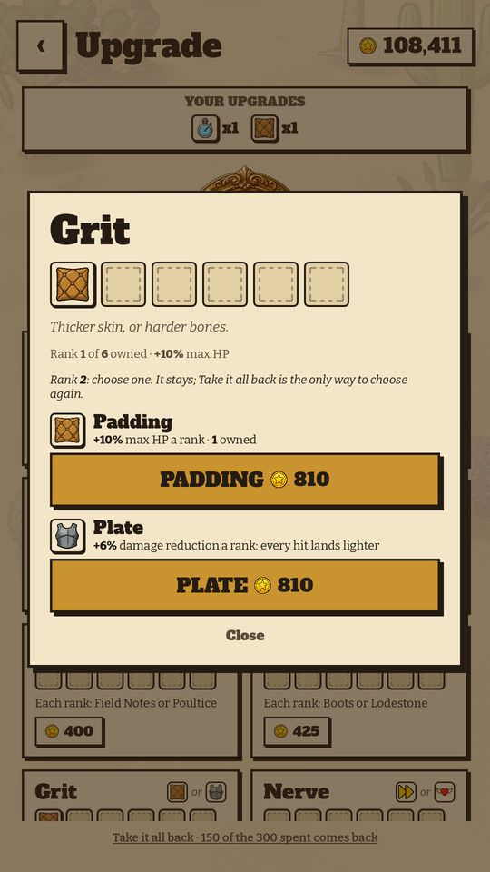
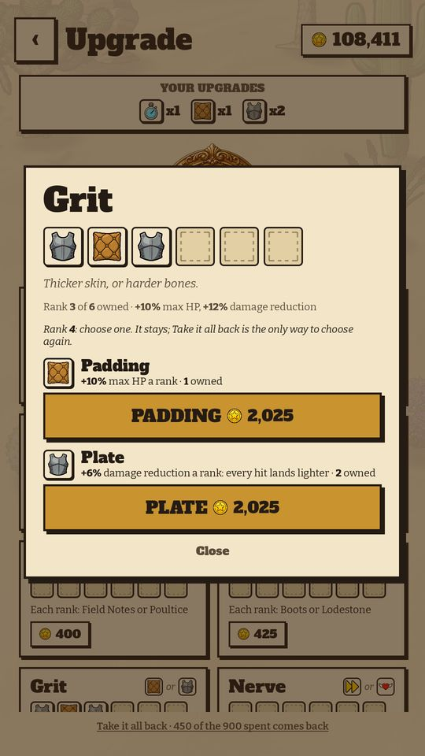
When it appears
From the title's Upgrade button or Results' Upgrade button. Back square / Esc / back gesture: closes an open talent sheet first, else to the title.
What you can do
| Back square | Closes an open talent sheet, else back to the title. |
|---|---|
| Talent tile (8: Grit, Drive, Stride, Study, Fortune, Choice, Nerve, Stakes) | Opens that talent's sheet over a sepia dim. A locked talent (behind an unlock quest) plays the locked sound and shows its quest text on the tile instead of a price. |
| Sheet: <FORM> · <coin> <price> (one buy button per form, e.g. PADDING / PLATE) | Buys the next rank in that form. Each rank keeps the form it was bought in ('Rank N: choose one. It stays; Take it all back is the only way to choose again.'). Locked when the purse is short (the locked sound). |
| Sheet: FULL | Shown at the sixth rank; locked. |
| Sheet: Close, or the dim | Closes the sheet. |
| 'Take it all back · <refund> of the <spent> spent comes back' (underlined link at the foot) | Asks 'Take it all back?' (WConfirm: 'Take it back' / 'Keep them'); confirmed, every rank goes and half the gold spent comes back. With nothing spent it reads 'Nothing to take back' and only plays the locked sound. |
What it shows
- Header 'Upgrade' with the gold plate
- YOUR UPGRADES strip: a chip per talent with ranks (its live form's icon and x<rank>), or a hint when empty
- The mirror (two brass eyes in dark glass) and 'Something looks back. It wants gold.'
- A 2-column grid of talent tiles: the name, both forms' icons ('or') while a rank is left, a rank bar of six slots (a bought rank shows its form's icon on a raised plate, an unbought one a dashed slot), 'Each rank: <A> or <B>' or what the ranks give now, and the next rank's price on a paper tag (or 'Full')
- The sheet: the name, the rank bar large, the flavour, 'Rank r of 6 owned · <effects>' or 'No ranks yet', then each form's icon, name, what a rank gives and '· n owned'
Rules
- Eight talents, two forms, six ranks each; every rank is bought in one form and keeps it; prices per talent and rank, the board sorted by first-rank price.
- Forms: Grit Padding (+10% max HP) / Plate (+6% damage reduction); Drive Muscle (+6% damage) / Tempo (-5% cooldown); Stride Boots (+5% move speed) / Lodestone (+18% pickup reach); Study Field Notes (+10% XP) / Poultice (+0.3 regen); Fortune Omen (+0.12 luck) / Greed (+12% gold); Choice Reroll (+1 reroll a run) / Banish (+1 banish a stage); Nerve Skip (+1 skip a stage) / Second Wind (+1 revive at ranks 1, 3, 5; +15% revive health at 2, 4, 6); Stakes (id spite) Difficulty (creatures +10% HP and attack, +4% speed a rank) / Boss (bosses and Elites the same) - Stakes also gives a hidden +5% XP and coins a rank.
- Once after the pass 88 migration, two toasts over the mirror: 'SPITE IS NOW STAKES' and '+N GOLD BACK FOR k RANKS'.
- The board does not scroll under an open sheet.
- Stale doc: the file's header comment still says switching forms is free and keeps the ranks; the code since pass 63 fixes each rank's form.
States
empty board (no ranks) · some ranks bought · a talent full · a locked talent (quest text) · purse short (buy locked) · Take it all back question
08Collection
game/ui/CollectionScreen.gdBrowse every weapon, card (line), passive, perk and enemy the player has met, and what locked ones need.
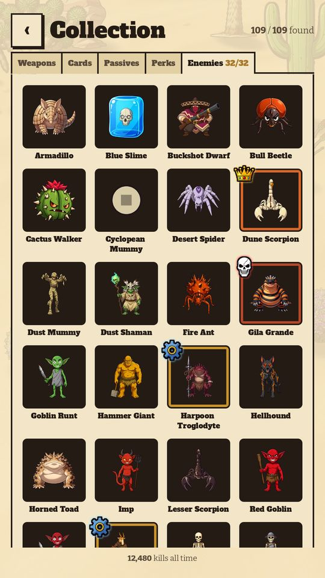
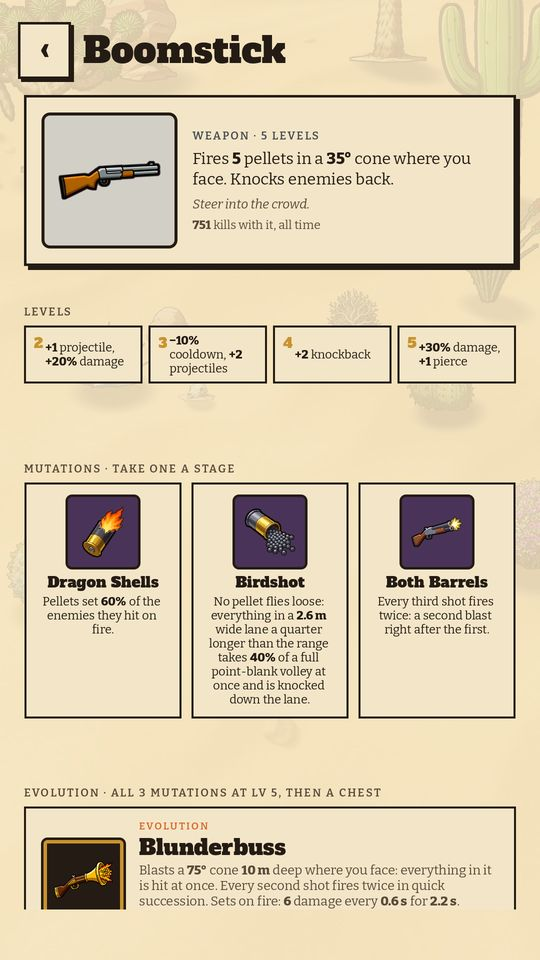
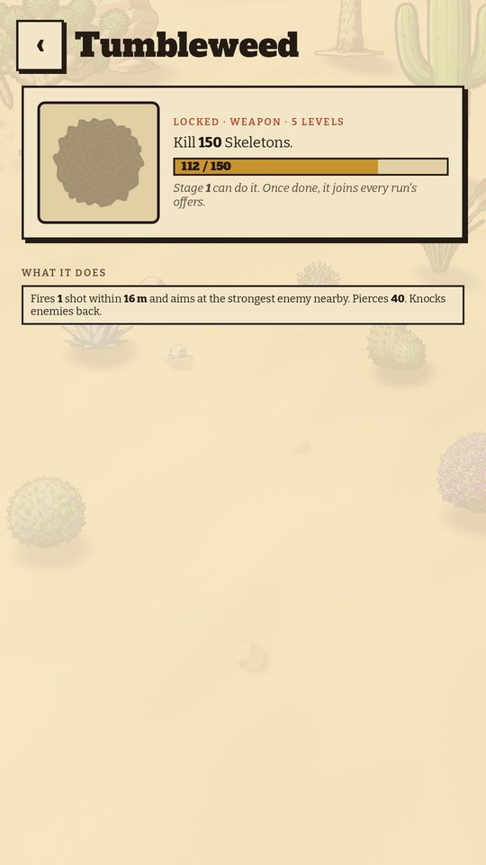
When it appears
From the title's Collection button. Back: an item page returns to the grid, the grid to the title. The developer menu's 'Hidden items' opens it in a Hidden mode (title 'Hidden', no tabs; back returns to the developer menu).
What you can do
| Back square | Page -> grid -> title (or the developer menu in Hidden mode). |
|---|---|
| Tabs: Weapons, Cards, Passives, Perks, Enemies | Switch the grid; the open tab shows its found count in the header ('n / m'). |
| Tile (found) | Opens the item's page. |
| Tile (not found yet) | Locked sound only ('Not found yet' / 'Not met yet' under an aged plate showing the icon's shadow). |
| Tile (behind an unlock quest) | Opens the requirement page: the aged plate, 'Locked · <kind>', the quest text, its progress, which stage can do it ('Any stage will do' / 'Stage N only'), and 'What it does'. |
| Grid / page (drag) | Scrolls. |
What it shows
- Header 'Collection' with the tab's found count; '<n> kills all time' at the foot
- Tiles: the plate in its colour (weapons light blue, cards light yellow, passives their rarity) and the name; danger badges on enemies (a boss skull in rock, an Elite crown in ember, a special's gear in brass) on the plate's corner and a frame in that colour
- Locked tiles: the quest's words and a brass progress bar 'x / y'
- Item page: plate, kind line ('Weapon · 5 levels', 'Card · 4 levels', 'Passive · <rarity> · no upgrades', 'Enemy · boss'...), full text, kills with it ('<n> kills with it, all time'), Levels grid, for a weapon 'Mutations · take one a stage' (heroes' own marked, e.g. 'CALAVERA ONLY') and 'Evolution · once it is full' ('Not yet found. Open a chest with every mutation taken and the weapon at its top level.'), for a line its evolution, for an enemy its Numbers (HP, speed, damage, 'takes n% less') and 'Killed n times'
Rules
- Hidden content, retired enemies and other heroes' own items are left out; what is found is per save.
- Evolutions and mutations live on their weapon's page; heroes are on the title, not here.
- Tabs and grid sit under the camera cutout.
States
fresh save (mostly 'Not found yet') · locked item (quest bar) · weapon page with mutations and evolution · enemy page · Hidden mode (developer)
09Settings
game/ui/SettingsScreen.gdPlayer options, privacy switches, wiping the save, and the hidden doors to the debug options and the developer menu.
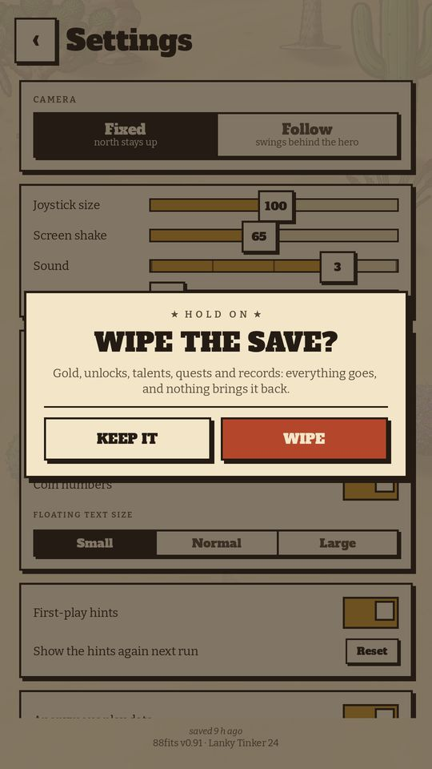
When it appears
From the title's Settings button. Back square / Esc / back gesture: to the title (a question up is cancelled first).
What you can do
| Back square | Back to the title. |
|---|---|
| Camera: Fixed ('north stays up') / Follow ('swings behind the hero') | Two-way choice, saved at once. |
| Joystick size (slider 60-140%) | Settings.stick_size 0.6-1.4. |
| Screen shake (slider 0-150%) | Settings.screen_shake 0-1.5. |
| Sound / Music (sliders, 5 steps) | sfx_volume / music_volume 0-1. |
| Damage numbers / Heal numbers / XP numbers / Coin numbers (switches) | Turn each kind of floating text on or off. |
| Floating text size: Small / Normal / Large | Settings.float_size. |
| First-play hints (switch) | Turns the hints on/off. Ten taps on it in one visit flip the player's debug mode (on, or off on a later visit); not in the prod build. |
| Show the hints again next run: Reset | Forgets which hints were seen; the button reads 'Done' for 1.2 s. |
| Anonymous play data (switch) | Settings.analytics; off deletes what waits to be sent. A line under it says what goes, or that this build's key file is empty. |
| Questions after a run (switch) | Settings.surveys; off also tells PostHog. |
| Debug panel (only while the player's debug mode is on) | Main menu: Painted ('the hero's portrait') / Live ('the level, the hero in it'); switches: 'Ranged weapons aim only on screen', 'Pierce damage drop-off', 'Full hero knockback', 'Fire forward' (Sabre, Spear, Hammer, Frisbee, Tumbleweed, Basketball fire where the hero faces until a creature is within 75% of range). |
| Wipe (rock button, 'Wipe the save') | Asks 'Wipe the save?' ('Gold, unlocks, talents, quests and records: everything goes, and nothing brings it back.', 'Wipe' / 'Keep it'); confirmed, Save.wipe() and the board rebuilds. |
| Version line '88fits v0.91 · <player name>' (hold 2 s) | Opens the developer menu; it turns brass halfway; sliding the finger 40 px away cancels. Not in the prod build. |
What it shows
- The panels above
- Over the version line: when the save was last written ('saved 3 min ago', '· from the backup'), or 'save failed · <error>' in rock
- After the ten taps, the version line says 'debug options ON · arena on the title, any item on level-up, hold, respawn and the last hits on Down!' (or OFF) for 3 s
Rules
- Every control saves at once.
- Small mismatch: the wipe row's subline says 'asks twice' but it asks once (one WConfirm).
States
normal · player debug mode on (Debug panel shown) · analytics key file empty · save error line
In a run: always on
10Run start (the spawn beam)
game/game/Game.gdA short arrival before play starts.
No capture: this one is a moment in the run, described here.
When it appears
The start of every run: the stage's look (filter) is set first, then a beam of light holds for 0.5 s and the hero falls down it onto the sand. Nothing spawns and the pause cannot open while it plays.
What you can do
| Any press, drag or key during it | Hurries the rest of the sequence. |
|---|
What it shows
- The beam and the falling hero over the stage-tinted map
Rules
- The tool launches and the arena can skip it.
States
Sundown (no filter) · Nightfall (blue filter) · Blood Moon (red ground, red filter)
11In-run HUD
game/ui/HUD.gdEverything the player reads while playing, with nothing interactive between y 700 and 1600 except the joystick.
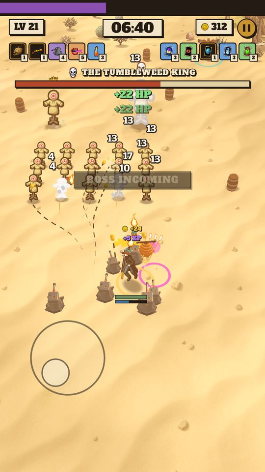
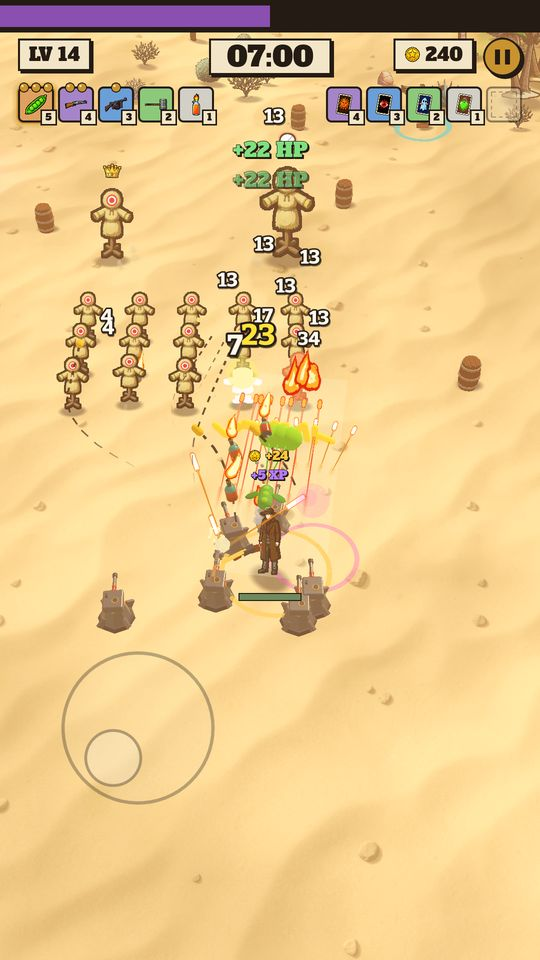
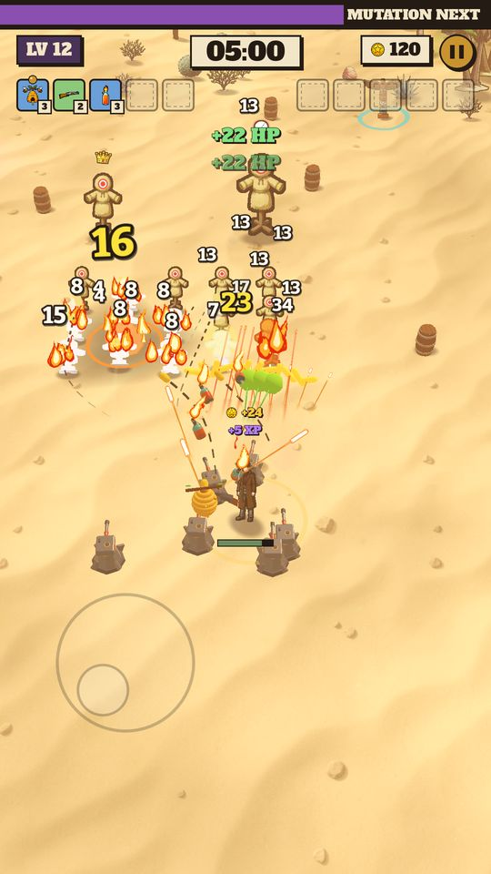
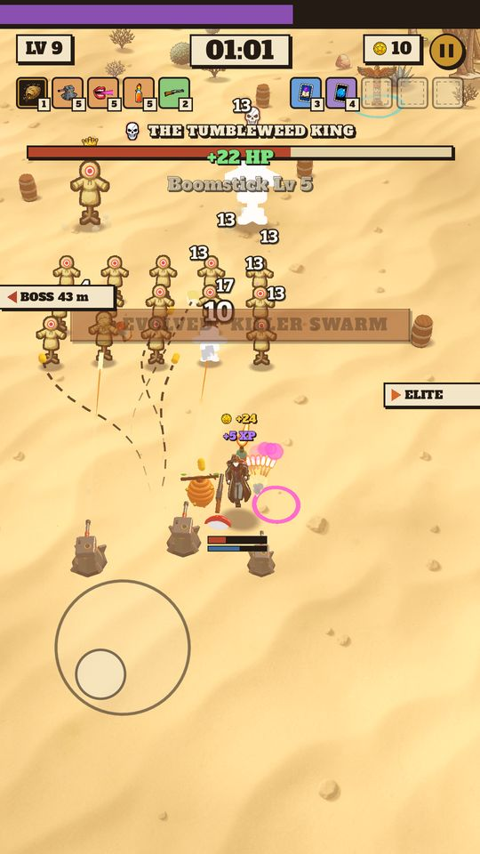
When it appears
Whenever a run is playing. It steps aside (hides) while any paused modal is up; the tap-to-continue gate brings it back so the picked card can fly to its slot. Hidden entirely in the run sim's fast mode.
What you can do
| Top strip (anywhere on the rail, plates or slots; the brass pause disc at its right) | Pauses: opens the pause screen. PlayerInput's thumb zone starts just below the strip. |
|---|---|
| Anywhere below the strip (drag) | The floating joystick: a ring (55% ink over a faint paper disc, a paper knob) appears under the thumb and steers the hero; its size follows Settings 'Joystick size'. Keyboard play on PC draws none. |
What it shows
- XP rail: a 65 px ink rail across the top edge with a purple fill (RAIL_H, pass 61)
- Top row of paper plates: 'LV n' on the left, the clock centred, the run's gold with a coin, the brass pause disc on the right
- Mutation-next mark: while a mutation offer is due and a weapon has a pick open the LV plate turns mutation plum with paper letters and 'MUTATION NEXT' sits at the XP rail's end
- Clock plate modes: the stage's own time on paper; while the portal waits, the seconds left before Endless on rock with 'ENDLESS IN' under it (pulsing in its last seconds); in Endless the time survived in it on ink with 'WAVE n' under it
- Slots: 5 weapon slots from the left, 5 card (line) slots from the right, 72 px each; a held item is its plate in its level's colour with a level tag (and a weapon's mutation dots, glowing when it waits to evolve); empty slots are dashed and see-through. Passive items are not on the HUD (the pause Build tab lists them)
- Power-up plates under the slots: sage plates with the seconds left for timed pickups (Berserk, Sprint, the Magnet power-up...) and Pollen; the War Drum's boost on its drum red
- Build-up words under the plates: Adrenaline stacks, Crescendo, Steady Hand, Gas Mask's reduction, SKEDADDLE, Hot Streak's damage
- Boss name (paper slab with ink outline, its badge) and HP bar while a boss lives
- Toasts under all that (WToasts): one at a time, 1.2 s each, in green (health), purple (XP) or paper; some carry an icon (a Totem spirit's face)
- Banner at 38% of the screen height for 2 s (WBanner): BOSS DOWN, EVOLVED · NAME (ember, with icon), UNLOCKED: NAME, A NEW HERO IS FOR SALE, ENDLESS (rock), PHOENIX FEATHER, REVIVED, DICE:..., DEBUG ARENA
- Edge pointers (WPointer): a paper tag on the left or right edge with a triangle in the target's colour and its name and distance, for the boss (rock), the portal (sage) and the Elite (ember) while they are off screen
- The hero's bars under him (HP, shield, Snake Oil's overheal past full in pink); a hit jiggles the bars sideways instead of shaking the screen
- '+N XP' and '+N' gold with a coin rising from the hero (batched over a quarter second)
- A full-screen colour flash for the nuke or a harpoon hit
Rules
- The strip sits W.safe_top() lower on a phone with a camera cutout; a long arena build splits the slots into two rows and makes the strip taller.
- First-play hints sit in the toast slot (see hints).
- No hero gauge for any hero since pass 69.
States
early run (empty slots) · full build (5 + 5) · mutation next · boss fight (boss bar, pointer) · power-ups up · portal countdown (ENDLESS IN) · Endless (WAVE n) · camera cutout
12First-play hints
game/ui/Hints.gdTeach the controls without a tutorial.
No capture: this one is a moment in the run, described here.
When it appears
In the first 30 s of a run while Settings 'First-play hints' is on, each once per save.
What it shows
- 'Drag anywhere to walk' until the hero moves
- 'He shoots by himself' ('She shoots by herself' / 'They shoot by themselves' by the hero's pronoun) for a few seconds after
- 'The purple is XP' until the first gem (gives up after a while)
- 'Tap the pause disc for your build' at 1:30 of a run
- After the first Totem gift: 'Totem gifts last the whole run'
- On the level-up screen the dry line reads 'Pick one. The plate's colour says what it is.' on a save's first offers; banish mode's first use explains more
Rules
- Shown in the HUD's toast slot; Settings 'Show the hints again next run: Reset' forgets them.
States
first run
13Floating numbers
game/ui/DamageNumbers.gdShow damage dealt and taken and healing, MMO style.
When it appears
During play, each kind while its Settings switch is on (Damage / Heal / XP / Coin numbers). Frozen while paused, hidden while a modal is up.
What it shows
- Creature hits: white numbers at the hit point (orange for fire ticks, purple for poison); crits big and yellow with a hop, mini crits paler
- On the hero: damage taken in red and shield soak in blue on his left, healing in green on his right, EVADE and BLOCK words
- Merging: hits on one creature close together add into one number; past 40 on screen they thin (pass 102); at most CAP live
Rules
- Size from Settings 'Floating text size' (Small / Normal / Large).
- A hit off screen gets no number.
States
normal hits · crits · burning crowd
14Last Stand
game/ui/LastStandFx.gdShow the passive's slow-motion damage window.
No capture: this one is a moment in the run, described here.
When it appears
When the Last Stand passive fires (toast 'LAST STAND'): the engine runs slowed for Run.LAST_STAND_SECONDS of real time; it gives the clock back while any screen pauses the run.
What it shows
- The world drained to a cold blue-grey with a red rim swelling with a heartbeat
Rules
- Ends at once if the hero falls or the run ends.
States
active
In a run: screens that pause
15Level-up cards
game/ui/CardScreen.gdChoose one of three upgrades: a new item or the next level of one held.
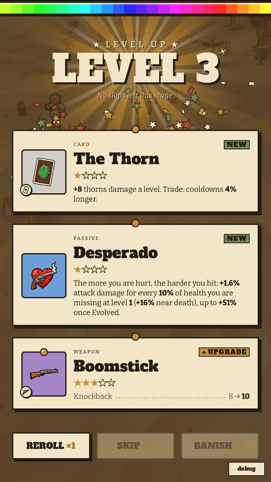
When it appears
Each level the hero gains, requested through Game's one-screen rule. The run pauses; levels gained meanwhile are banked and shown one after another. A level with nothing left to offer pays +10 gold instead ('Nothing left to pick. +10 gold'). Closes on a pick, a skip; then the tap-to-continue gate.
What you can do
| Item card (one of three) | Takes it; the card is remembered so the gate flies it to its HUD slot. A held card sits on its shadow with a brass band. |
|---|---|
| REROLL ×N | A fresh set of three; uses one reroll (1 a run by default, +1 a rank of Choice/Reroll). Ends banish mode. At 0: 'No rerolls left. The Choice upgrade gives more.'. |
| SKIP ×N | Closes with nothing; uses one of the stage's skips (2 a stage, shared with chests and mutation offers; Nerve/Skip adds). At 0: 'No skips left this stage.' |
| BANISH ×N | Enters banish mode: the title turns to a red BANISH (star line 'Strike one off'), a line explains ('Tap a new item to strike it from this run. It will not be offered again.'; longer the first time), cards that may go wear a red BANISH stamp, items already held are dimmed 'YOU HAVE THIS', an evolution of a held item 'EVOLVES YOURS'. Tap a card to strike it: stamped BANISHED, a replacement drops in, one banish used (1 a stage by default). Locked at 0 or when nothing on the table can go ('Nothing here can be banished: you already have all of these.'). |
| CANCEL (BANISH in banish mode) | Leaves banish mode. |
| A refused card in banish mode | Shakes and says why: 'You have X: banishing it would lock its upgrades.', 'X evolves what you have: it can't be banished.', 'X is a mutation: mutations can't be banished.', 'Gold cannot be banished.' |
| debug (small button bottom right; developer 'Debug buttons on modals' or player debug mode) | Opens the debug hand. |
What it shows
- A rainbow full XP rail along the top edge
- Star line 'Level up', the title 'LEVEL N' over a turning brass shine, a sunburst and confetti on entry, the dry line 'Pick one. The desert waits.'
- Three item cards dropping in one after another: plate (kind by colour, corner glyph), kind word, name, level stars, one effect line; a tag UPGRADE (brass) / NEW (sage) / EVOLUTION (ember); an upgrade lists its changes ('Damage 12 -> 15') and its new stars pulse; the hero's favourite has a brass heart and the word FAVOURITE
- Bottom row REROLL ×N · SKIP ×N · BANISH ×N
Rules
- Always three cards (luck only changes rarity odds; pass 52).
- Skips and banishes refill at every stage start; rerolls are per run.
- Never offered: banished items, quest-locked items not held, hidden items, other heroes' own weapons, stage-3-only items before stage 3, a weapon's base once it has evolved.
- A long list shrinks to fit above the buttons; layout under the camera cutout.
States
normal offer · banish mode · out of rerolls/skips/banishes (locked buttons) · first offer with hint line
16Mutation offer
game/ui/CardScreen.gdTake one of a weapon's path mutations (its three paths lead to its evolution).
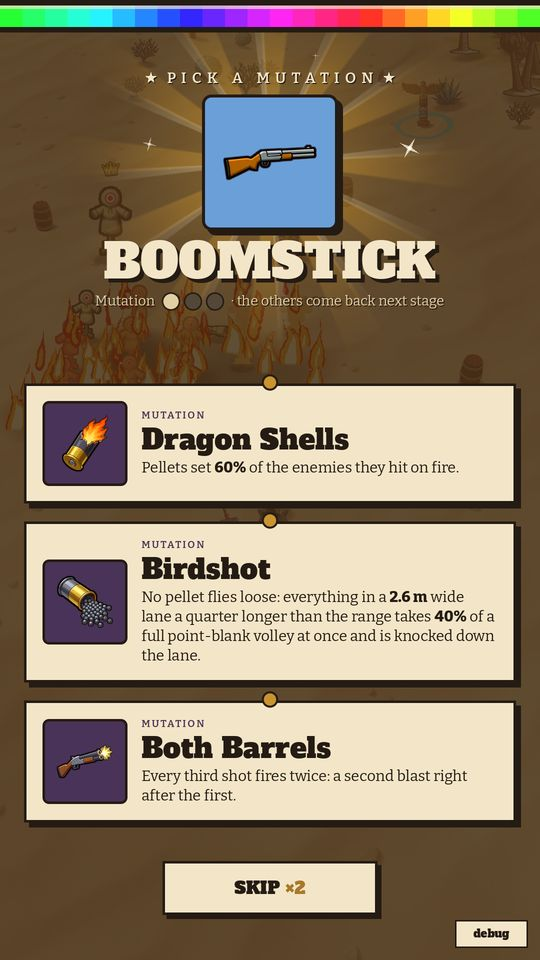
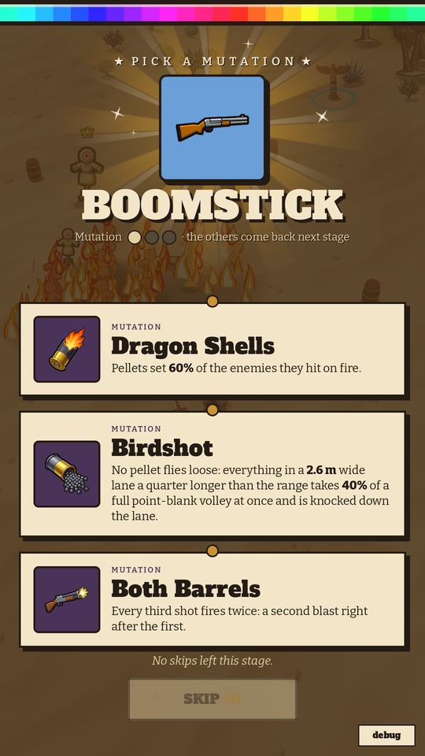
When it appears
A mutation offer falls due on the stage's path_times and replaces the hero's next level-up's three cards; the HUD's MUTATION NEXT mark warns of it. Also through Modal.PATH (priority 20) for tools. The run pauses; closes on a pick or a skip, then the gate.
What you can do
| Weapon reel (WWeaponReel) | Runs first: the hero's weapons with an open path slide past a brass window, ticking and slowing, and stop on the weapon picked at random; a single weapon only wobbles. A tap anywhere skips to the landing; a second tap goes on at once. |
|---|---|
| Mutation card | Takes that mutation; toast in mutation purple. |
| SKIP ×N (single, centred) | Closes with nothing; uses one of the stage's skips ('Mutation skipped'). At 0: 'No skips left this stage.' |
What it shows
- Head: 'Level N! Pick a mutation' (or 'Pick a mutation'), the weapon's plate (shine behind it once the reel lands), its name, the word 'Mutation' and its mutation rivets (taken / offered)
- The mutation cards under it
- The rainbow XP rail, full
Rules
- No REROLL or BANISH here; mutations can never be banished.
- All three path mutations plus the weapon at level 5 = its evolution at a chest.
States
reel spinning · reel landed with cards · no skips left
17Chest
game/ui/ChestScreen.gdThe run's reward moment: a slot-machine reel lands on one item.
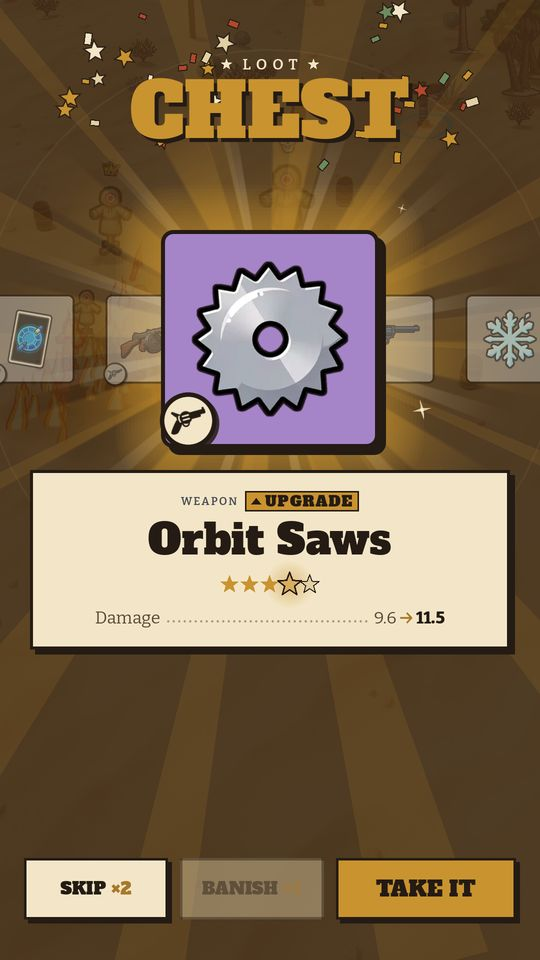
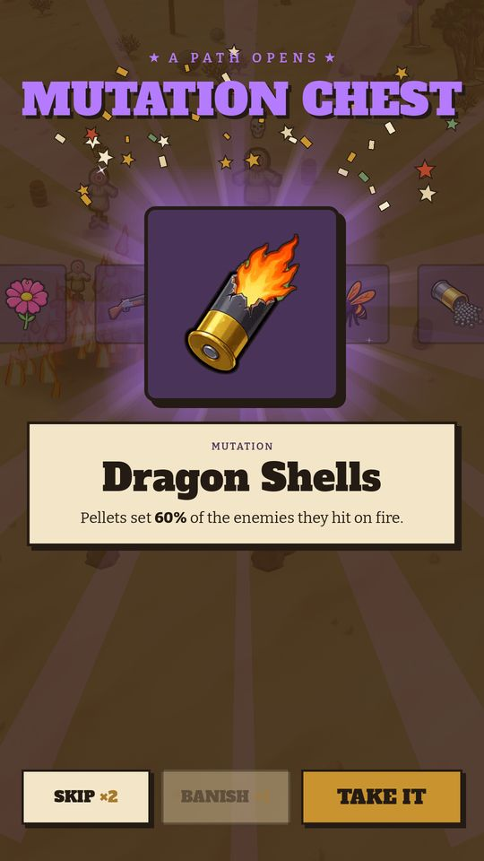
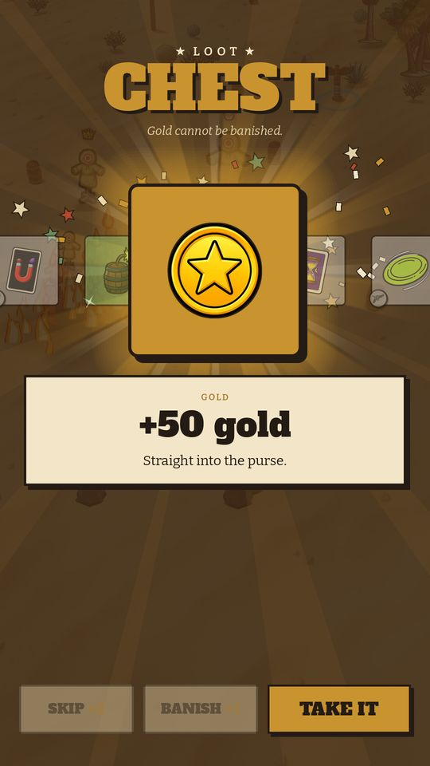
When it appears
Touching a chest on the ground (Elite and special drops, the boss's chest, Dice ambush) -> Game.open_chest. The run pauses. A boss chest also vacuums every pickup on the map in ('THE SPOILS COME TO YOU'). Closes on TAKE IT or SKIP, then the gate.
What you can do
| Tap during the chest's opening | Skips to the spin. |
|---|---|
| Tap during a spin | Hurries the rest into 0.6 s. |
| TAKE IT | Takes the landed item; toast 'Chest: <line>'. |
| SKIP ×N | Closes with nothing; uses one of the stage's skips ('Chest skipped'). Locked on gold ('Gold goes straight into the purse.') and at 0 ('No skips left this stage.'); with no skip the chest cannot be let go. |
| BANISH ×N | Strikes the landed item from the run and the reel spins again (~2 s) to a new roll, the chest staying open. Only a new item can go: refused with 'Gold cannot be banished.', 'An evolution cannot be banished.', 'A mutation cannot be banished.', 'You have X. Only new items can be banished.' At 0: 'No banishes left this stage.' |
What it shows
- Star line 'Loot' and CHEST in brass (a boss's: 'A path opens' and MUTATION CHEST in purple, violet light)
- The chest (WChest) dropping in on the lower third, knocking three times and throwing its lid open, its light rising into the reel's row; a turning shine behind it
- The reel of plates running sideways for about four seconds and landing; the landed plate grows to 420 px with a brass glow
- Under it: the kind word with UPGRADE / NEW / EVOLUTION tag, the name, the stars (an upgrade's new ones pulse), the effect line or change rows; GOLD: 'Straight into the purse.'; the favourite's heart
- SKIP ×N · BANISH ×N · TAKE IT
Rules
- A boss chest's reel runs past the open paths only (mutations).
- Slot-machine sounds: lever, spin loop, clunk, jackpot (WSlotSound).
- The HUD steps aside.
States
ordinary chest · boss mutation chest · landed on gold · landed on an evolution · after a banish respin · no skips left
18Tap to go
game/ui/ResumeGate.gdLet the player re-grip before the run goes on, and show where the pick went.
When it appears
After a level-up pick, a mutation pick or a chest closes and no other screen waits. The shop, the Stranger, the Totem, the drum, the portal and Down! resume without it.
What you can do
| Any touch | Resumes the run (with 1 s of blinking invulnerability) and the same touch can start the joystick. A touch on the HUD strip is kept by the gate so it does not also open the pause. |
|---|
What it shows
- The dim lifting from 78% to 40% sepia
- The picked card shrinking and flying (turning -8 degrees) into its HUD slot, which takes a brass border and level tag (a passive flies into the pause disc)
- 'TAP TO GO' and 'Still paused. They'll wait.' at y 1500
Rules
- Not a screen of its own, but it counts as one for the one-screen rule (a request waits for the tap).
States
after a pick · after a skip (nothing flies)
19The Shop
game/ui/StructureShop.gdSpend the run's gold on one of three items.
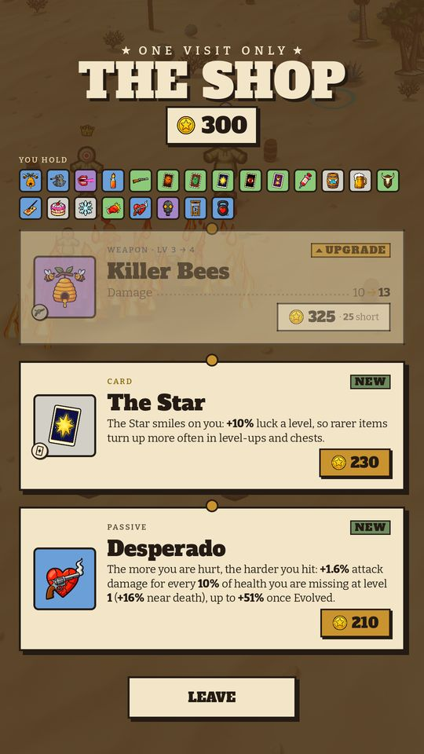
When it appears
Using the shop structure on the map -> Modal.SHOP. The run pauses. Empty offer: '+50 gold' toast instead. Closes on a purchase or LEAVE (or Esc on PC); the run resumes straight (no gate).
What you can do
| Item card (price is the button) | Buys it if the run's gold covers it; toast 'Bought!'. One purchase and the stall is spent. A card you cannot afford is aged at 60% with '· N short' and plays the locked sound. |
|---|---|
| LEAVE | Closes without buying; the stall is spent too. |
What it shows
- Star line 'One visit only', THE SHOP, the run's gold plate
- 'You hold': a wrapping row of plates for every weapon and passive held
- Three item cards with their prices
Rules
- Prices are about half a stage's gold (stage 1-3; Endless stays on stage 3) x kind (weapon > line > passive/perk) x rarity x (1 + a step per level held).
- The stack shrinks to fit above LEAVE under a camera cutout.
States
affordable cards · some cards short · long build tray (two rows, smaller plates)
20The Stranger
game/ui/StrangerScreen.gdA bargain: one item for a share of max HP for the rest of the run.
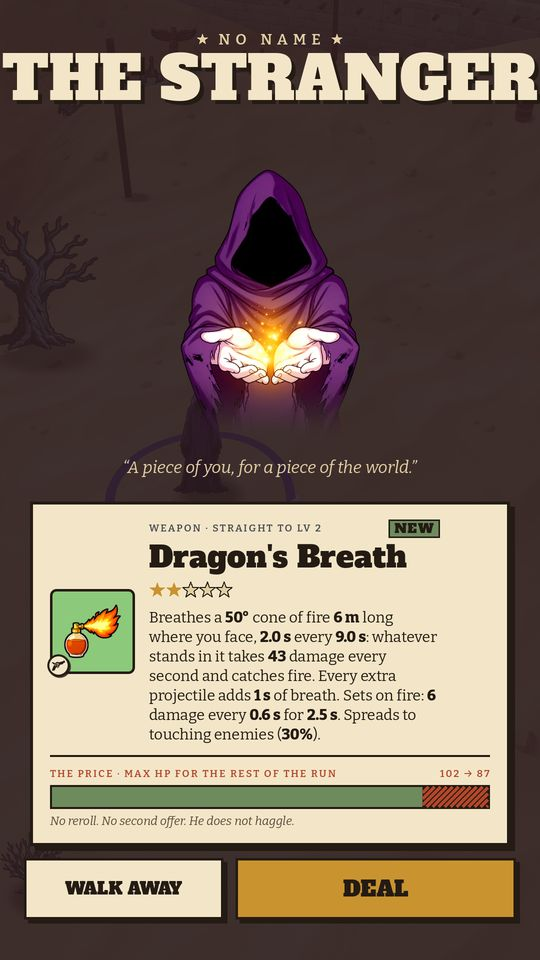
When it appears
Using the hooded figure structure -> Modal.STRANGER. The run pauses. Empty offer: '+60 gold' instead ('The Stranger had nothing for you.'). Closes on DEAL or WALK AWAY; the run resumes straight.
What you can do
| DEAL | Takes the item and pays the HP; toast 'The deal: <line>, for N% of your health'. |
|---|---|
| WALK AWAY | Refuses; toast 'The Stranger is gone. Only his cloak stays.' |
What it shows
- Plum-black dim, star line 'No name', THE STRANGER
- His cut-out holding the item (placeholder until art/ui/wanted/stranger.png exists) and the quote '“A piece of you, for a piece of the world.”'
- The deal panel: the item as a card; 'The price · max HP for the rest of the run' as a bar losing its end in hatched rock, 'max -> new max'; 'No reroll. No second offer. He does not haggle.'
Rules
- Either way he is gone afterwards (only the cloak stays on the sand).
- The HP cost is a fraction of max HP.
- Under a camera cutout the panel rises and the portrait shrinks so nothing runs under the buttons.
States
offer shown
21Totem (Spirit Pole)
game/ui/TotemScreen.gdPick one of three small permanent-for-the-run stat gifts.
When it appears
Using a Totem Pole (10-12 a map) -> Modal.TOTEM. The pole's ring flashes, the run pauses. A pole with nothing to offer only shows its name. Closes on a pick (no way out otherwise); the run resumes straight.
What you can do
| Gift row (its carved segment and its tag) | Takes that gift: the chosen face flies to the toast slot, the rest drops away; toast '<Spirit> · +2% move speed' with the face. |
|---|---|
| Anywhere else | Nothing; there is no close button. Dragging off a held row cancels the press. |
What it shows
- '★ TOTEM k OF n ★' (this gift's count of the map's poles)
- A carved pole on the left: the thunderbird crest on top, three spirit segments with carved faces on a cedar post
- A nailed paper tag beside each: the amount big with its stat ('+2%' 'move speed'), the spirit ('Le-loo, the Wolf'), a roll gauge showing which third of its range the roll landed in (brass on a top third)
Rules
- The pole greys as the gift is taken.
- Gifts stack for the run; the first one taught by the hint 'Totem gifts last the whole run'.
States
three gifts offered · a top-third roll (brass)
22War Drum moment
game/ui/DrumMoment.gdA short drum show that announces a 15 s boost.
When it appears
Using the War Drum structure -> Modal.DRUM. Time stops: the run pauses, every sound effect stops and the music holds. Lasts params.moment.seconds (2.2 s), then the boost starts and the run resumes straight.
What you can do
| Any touch | Swallowed while it plays; it cannot be skipped by the player. |
|---|
What it shows
- The drum (cut from its painting) fading in centre screen, squashing and springing on each slap, waves and ink slap lines from each hit; the last big hit flashes the screen and brings in the boost in words
- After it: a rock-red HUD plate counting the boost's seconds, and a toast '<NAME>: 15 s'
Rules
- The boost: x2 damage and attack speed, knockback, +15% speed for 15 s; halved where Rage or Sprint already boost (params.stack).
- The run sim and an ended run take the boost without the moment.
States
playing · boost plate on the HUD
23Pause
game/ui/PauseScreen.gdLook at the build and the stats, change a few options, or abandon the run.
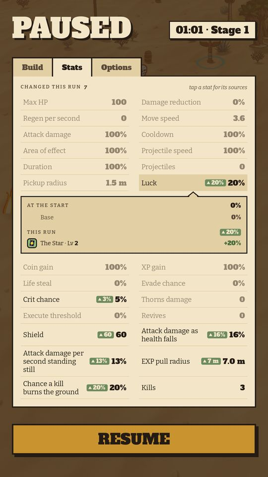
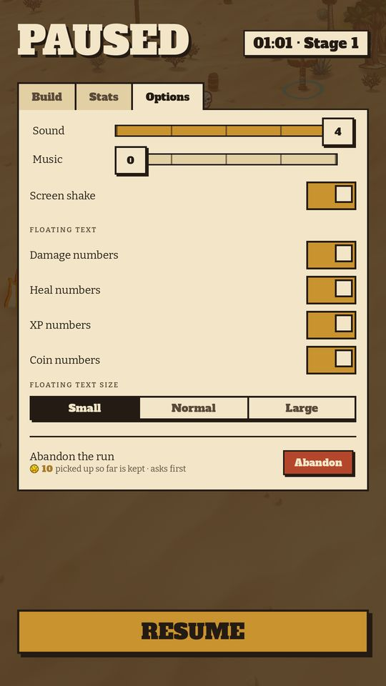
When it appears
A tap on the HUD's top strip or pause disc, Esc on PC, or the app going to the background. Not during the spawn beam, after the run ended, or while another screen is up. The Android back gesture in a run is ignored (only logged). Closes on RESUME (or Esc).
What you can do
| Tabs: Build / Stats / Options | Switch the board. |
|---|---|
| Build: an item row | Opens on its numbers (a stat grid), its mutation chips and what evolving still needs. |
| Stats: a stat cell | Opens its sources card: 'At the start' (base, hero, Upgrade board) and 'This run' (cards, items, perks, mutations, levels, Totem gifts, the Stranger, timed buffs) with amounts. |
| Options: Sound / Music sliders | As Settings. |
| Options: Screen shake (switch) | On = 1.0, off = 0 (a switch here, a 0-150% slider in Settings: turning it on here resets a custom value to 100%). |
| Options: Damage / Heal / XP / Coin numbers, Floating text size | As Settings. |
| Options: Abandon (rock) | Asks 'Abandon the run?' ('The run ends here, and the N gold picked up so far comes home with you.', 'Abandon' / 'Keep playing'); confirmed, the run ends and goes to Results. |
| RESUME | Closes the pause; any screen asked for meanwhile comes next. |
| Board (drag) | Scrolls. |
What it shows
- 'PAUSED' and '<stage clock> · Stage N' (or 'Endless')
- Build: groups Weapons (n / 5), Cards (n / 5), Passives ('n · not on the HUD'), Perks; each row the plate, stars and what it does; a spent once-a-run item (Phoenix Feather) reads '(used)'
- Stats: 'Changed this run' count, a breakdown card (max HP by default), two columns of every stat with change pills (sage better, rock worse) since the run's start
- Options: the purse with a coin 'picked up so far is kept · asks first'
Rules
- The pause screen counts as a screen for the one-screen rule.
- Esc closes the abandon question first, then the pause.
States
Build tab · Build row opened · Stats tab with a source card · Options tab · abandon question
24Down!
game/ui/ReviveScreen.gdRevive once (plus Upgrade revives) or end the run.
When it appears
1.2 s after the hero falls, through Modal.REVIVE, which beats every other screen (priority 70): while he is down only Down! may open; level-ups are banked and chests/offers wait until he stands. Not shown when Phoenix Feather is ready (he stands up by himself, banner PHOENIX FEATHER). The run pauses. Closes on a decision or when the 8 s count runs out (= stay down).
What you can do
| GET UP · WATCH AN AD | Revives at the revive_hp share (half, more with Second Wind) with a blast that clears round him; uses a chance. It is a stand-in: no ad plays. Locked when no chance is left ('NO CHANCES LEFT'). |
|---|---|
| STAY DOWN (rock) | Asks 'Stay down?' ('The run ends here, and the N gold comes home with you.', 'Stay down' / 'Not yet'), the count held meanwhile; confirmed, the run ends -> Results. |
| respawn (top right; developer 'Free revive button' or player debug mode) | A free revive that does not use a chance. |
| hold time (debug) | Holds the count. |
| Hit log: hold / copy (debug or developer 'Hit log') | hold pauses the count ('go on' resumes); copy puts the last 30 s as text on the clipboard ('copied'). |
What it shows
- Rock dim, 'N CHANCE(S) LEFT', DOWN!
- A paper disc with the seconds counting down (8) and 'get up'; ticks in the last 3
- '<killer> put you down.' with its badge (or 'Something put you down.')
- '<clock> · N kills · Lv N'
- 'Stay down and the <coin> N gold still comes home.'
- Debug only: the last 30 s list, newest first: time before the fall, badge, the creature's name in its colour, what it cost or healed, a red X on the fatal hit
Rules
- One chance a run plus Nerve/Second Wind's revives (1 + revives - used).
- The gold revive was removed in pass 77 (GOLD_COST 150 and the 'gold' path remain in code, unused).
- A death banks the purse like an extraction (pass 70).
States
1 chance left · no chances left (GET UP locked) · debug with hit log · stay down question
The end of a stage
25Stage clear (the portal)
game/ui/PortalDialog.gdLeave with the run's gold before Endless, or keep fighting.
When it appears
After the stage's boss dies a portal opens (toast 'PORTAL OPEN: extract before Endless') and a 60 s countdown to Endless starts (HUD clock 'ENDLESS IN'). Walking into the portal asks through Modal.PORTAL. The run pauses but the countdown keeps running while the dialog is up. Closes on EXTRACT, NOT YET, back/Esc, or by itself when the countdown ends.
What you can do
| Extract ('Safe · run ends', the run's gold big in brass) | Ends the run as extracted (Save 'extract_<map>_<n>', totals) -> Results. |
|---|---|
| NOT YET (or back / Esc) | Closes with no decision; the run goes on, toast 'The portal waits'; the dialog asks again once the hero steps out and walks back in. |
What it shows
- A BOSS DOWN tag and 'STAGE N CLEAR'
- The Extract road
- The Endless card (not a road): 'Endless', 'Starts in' with the seconds counting down (rock in its last seconds), what Endless is, and 'The N gold comes home either way.'
- A footer saying what NOT YET means
Rules
- If the countdown runs out with the dialog up, it closes itself and Endless starts behind it.
- There is no 'continue to the next stage' since pass 87: each stage is its own run.
States
countdown running · countdown in its last seconds (rock)
26Endless
game/ui/HUD.gdAn open-ended score attack after the stage's boss.
When it appears
When the portal's countdown ends without an extraction: the portal closes, an ENDLESS banner in rock, then a big wave and a stronger one every 10 s until the hero falls.
What it shows
- Clock plate on ink with the time survived in Endless and 'WAVE n' under it, pulsing on each new wave
Rules
- Creatures grow in HP, attack and speed each wave and resist non-explosive knockback more over 90 s.
- 0.35 XP share, rare coins.
- The run ends only by death or abandon; Results reads 'Fell in Endless'.
States
wave 1 · late waves
27Results
game/ui/ResultsScreen.gdTell the run's story: the gold banked, the kills and damage over time, and what was unlocked.
When it appears
1.2 s after any run ends (extract, stay down / count out, abandon). Back gesture: dismisses a survey card first, else to the title. No header or back square.
What you can do
| Anywhere but a button (tap) | First tap hurries the sequence playing (SPEED_UP), a second ends it. |
|---|---|
| PLAY AGAIN | Starts the same stage again with the same hero. |
| Upgrade (turquoise) | Opens the Upgrade board. |
| Main Menu | Back to the title. |
| Board (drag) | Scrolls freely once the show is over (held at the top while the first sequence plays). |
What it shows
- Star line (Extracted / Fell in Endless / Run over), the stage line ('STAGE 1 · SUNDOWN · BEATEN') in the stage colour, the run time big, 'Endless m:ss · wave n' when it ran, 'Lv N · N kills · N chests · N evolutions'
- Hero panel: his badge (played look), 'Banked' counting up along the run's purse curve, the purse before and after; a NEW BEST seal when the run beat a previous best by 0.5 s
- Run performance: the kills chart drawn left to right with badges (a grave for each fall, a skull per boss, a crown per Elite, a gear per special), Kills and Damage counters, then 'Damage dealt': a row per source (plate or '?', name, damage number over a share bar, percent) arriving as the line reaches the moment each joined
- 'Unlocked this run': each unlock landing with an UNLOCKED (or FOR SALE for a hero) stamp; 'Unlock progress': bars filling from where they stood (this run's part in sage)
Rules
- A death and an abandon bank the purse like an extraction (pass 70).
- A run of 60 s or more may bring the end-of-run survey 1.4 s after the show ends.
- Music mu_results.
States
extracted · run over (died) · fell in Endless · new best · with unlocks · survey over it
28Survey card
game/ui/wanted/WSurvey.gdAsk the player a few questions written in PostHog Surveys.
When it appears
Over the Results screen 1.4 s after its show ends, when Analytics has a survey due. Also from the developer menu's 'Surveys · show one now'.
What you can do
| Rating numbers / choice buttons / text box | Answer the page's question (a rating row with its two labels; single choice; multiple choice 'Pick any that fit.'; a text box 'Type here' that raises the phone keyboard and lifts the card above it). |
|---|---|
| NEXT / SEND | NEXT keeps the answer and turns the page; SEND on the last page sends every answer ('survey sent'). Needs an answer unless the question is optional. |
| NOT NOW (or the back gesture) | Dismisses; PostHog hears 'survey dismissed'; answers so far are not sent. |
| Don't ask me again (under the card) | Dismisses and turns Settings' 'Questions after a run' off. |
| Dim | Nothing. |
What it shows
- Star line 'A quick word', '1 / 3' progress, the question and its line
Rules
- A finger outside the text box drops its focus (hides the keyboard).
States
rating page · choice page · text page with keyboard
Shared pieces
29Question card
game/ui/wanted/WConfirm.gdThe kit's one confirmation pop-up.

When it appears
Before any deed that cannot be undone: buying a hero, Take it all back, wiping the save, abandoning the run, staying down, leaving the arena, resetting surveys. One per host; works paused or not.
What you can do
| Way out (paper, left: 'Not now', 'Keep them', 'Keep it', 'Keep playing', 'Not yet', 'Stay', 'Keep') | Cancels. |
|---|---|
| The deed (rock or primary, right) | Does it. |
| Dim, back gesture, Esc | Cancel. |
What it shows
- 'Hold on' star line, the question in slab, one plain line on what is lost, an ink rule, the two buttons
Rules
- Replaced every old 'Sure? Tap again' button (pass 45).
States
any of the questions above
For testers only
30Player debug mode
testers onlygame/ui/SettingsScreen.gdLets a tester reach the debug arena and test helpers without the developer menu.
No capture: this one is a moment in the run, described here.
When it appears
Flipped by ten taps on Settings' 'First-play hints' switch in one visit, or by the developer menu's 'Debug mode' row. Locked off in the prod build.
What it shows
- Title: the ARENA button top right
- Settings: the Debug panel (title look, four test switches)
- Level-up cards: the small 'debug' button (the debug hand)
- Down!: the hit log of the last 30 s, 'respawn' (free revive) and 'hold time'
- Arena HERO tab also lists heroes out of play
Rules
- Settings.debug_mode; also makes Game print an error the frame two modal screens are visible.
States
on · off
32Debug arena
testers onlygame/ui/ArenaPanel.gdA test room for every creature, item, hero, look and drop.
When it appears
From the title's ARENA (player debug mode) or the developer menu's 'Arena'. The map and the hero with nothing coming unless asked ('DEBUG ARENA' banner). The game waits while the bottom sheet is open. Leaving returns to the title; nothing done here reaches the save.
What you can do
| Quick column (right edge): ARENA / AGAIN / CLEAR / WAVES (HOLD while running) / LV +1 | Open the sheet; repeat the last spawn; clear every creature and shot; run or hold the real wave director; level the hero. A status line under them. |
|---|---|
| ENEMY tab | Every creature by group (roster, specials, Elites, bosses, retired) with how many, where (near, ring, far), an Elite modifier and hold still; a boss comes as a real boss. |
| WAVES tab | Arena clock, a crowd from the roster at that minute, a swarm of one kind, the director run or held, an Elite or special now. |
| ITEMS tab | Every weapon (mutations and evolution stacked under it), evolution, line, passive, perk with - / + / max past the caps, INFO (what the player reads), EVO; Card look and Weapon looks rows. |
| HERO tab | Swap hero in place, the hero's looks as chips ('USE FROM NOW ON' keeps one), levels (+1, +5, +10, to 30), level-up cards on/off, god mode, heal, a hit, Go down (the real fall), gold, rerolls. |
| DROPS tab | Every power-up by the hero, a chest, a boss chest, gem or coin showers. |
| WORLD tab | Game speed, freeze the crowd, kill/remove everything, camera zoom, stats overlay, training dummies and attacking dummies, the field, 'Leave the arena' (asks 'Leave the arena?' 'Back to the title. Nothing done here is kept.', 'Leave' / 'Stay'). |
What it shows
- Bottom sheet with six tabs (ENEMY, WAVES, ITEMS, HERO, DROPS, WORLD)
- Art variants section with look chips (shelved looks behind a choice)
Rules
- A death respawns the hero at once unless HERO's Go down.
- The quick column keeps under the boss bar and the camera cutout.
- Old UiKit look.
States
sheet closed (quick column) · each tab open
33Debug panel (in run)
testers onlygame/ui/DebugPanel.gdQuick cheats while playing.
No capture: this one is a moment in the run, described here.
When it appears
In a run when the developer menu's 'Debug panel in run' is on (shown from the start), or toggled with F1 on a PC. Not paused.
What you can do
| Spawn 50 walkers / Spawn 100 swarmers | Spawns packs of the map's 'walker' / 'swarmer' skins 12 m ahead. |
|---|---|
| Spawn elite / Spawn boss | Spawns an Elite / the map's boss. |
| Level up | One level. |
| +500 gold | Gold. |
| God mode | Toggles invulnerability. |
| Kill all | Kills every creature. |
| Vacuum | Pulls every pickup in. |
| Chest here | A chest 2 m ahead. |
| Give random weapon | A weapon not held. |
| Max all held | Maxes every held item. |
What it shows
- 'fps · alive · proj · gems' line
Rules
- Old UiKit look; its header comment says 'enable in Options', but the switch is in the developer menu.
States
visible
34Debug hand
testers onlygame/ui/DebugHand.gdHand over any weapon, evolution, line, passive, perk or mutation at any level to try a build.
No capture: this one is a moment in the run, described here.
When it appears
From the 'debug' button on the level-up screen (developer 'Debug buttons on modals' or the player's debug mode).
What you can do
| Item rows with a level box | Tap to choose items and set how many levels of each. |
|---|---|
| Give | Hands them over and closes; the offer underneath stays standing. |
What it shows
- A list of every item in the game (a line handed over as the passive it is)
Rules
- Old UiKit look, not the Wanted kit.
States
open over the level-up
35Old meta shop (unused)
game/ui/ShopScreen.gdForwards an old route to the Upgrade board.
No capture: this one is a moment in the run, described here.
When it appears
Never from the game's UI: nothing links to ShopScreen.tscn except tools/smoke_run.gd's screen list.
What you can do
| Open Upgrade | Goes to the Upgrade board. |
|---|
What it shows
- 'The shop is the Upgrade board now.'
Rules
- Dead screen.
Found while writing this
- The ad revive is free. Down!'s "GET UP · WATCH AN AD" revives at once and plays no ad; it still uses one of the run's chances.
- Screen shake works differently in two places. Settings has a 0-150% slider; the pause screen has an on/off switch, and turning it back on there resets a custom value to 100%.
- The Totem has no way out. A gift must be picked; there is no close button.
- The War Drum's moment cannot be skipped. Every touch is swallowed for its 2.2 seconds.
- The back gesture does nothing in a run. It is only logged; Esc on a PC opens and closes the pause.
- The title's map line does nothing yet. It steps through maps, and Red Canyon is the only one.
- NEW BEST needs an earlier best. A first run never shows the seal.
- Small text slips: Settings' wipe row says "asks twice" but asks once; the Upgrade board's code notes still describe free form switching (gone since pass 63); the in-run debug panel's notes point to a switch that now lives in the developer menu.
- One dead screen: the old meta shop only forwards to Upgrade, and nothing in the game opens it.